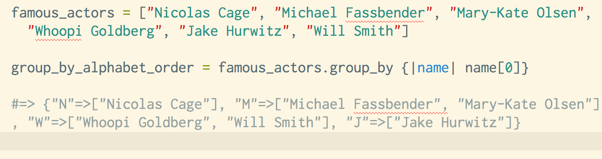

The method group_by in Ruby is a pretty aptly named method. You'd use this method when there are a bunch of objects which you would like to organize into groups. For example let's say you have a list of 6 words and you'd like to organize those words into groups, based on the length of each word. You use the method "group_by" to form a hash, where each "group" contains words, and each group is unique, containing only words of a certain length! And that's group_by briefly explained, but my "words:example" ratio is getting alarmingly high, so I'll demonstrate how nice an enumerable method group by really is:

Above is an array of actors which are grouped by the first letter in their name. The resulting output is a hash. The keys of the hash are what we are grouping by (in this case each group is based on a letter from the alphabet). The values of the hash are what each group contains. (In this case it's the various actors who share a common letter, of their first name). To sum up, we used "group_by" to make groups of actors.
Here is an example using numbers:
In this example we grouped the numbers based on the code block after out method. The groups are formed based on what is left over when you divide each one of the numbers in our range, by 3. For example in the group 0, When you divide 3, 6 and 9 by 3, the remainder is 0. It's important to realize that each group in the method group_by is formed from the code block after the method; group_by. Understanding how the groups are made (from the block of code after the method), is key to understanding group_by.
Lastly here's a group by method where movies are sorted into the length of their title:
What can we learn from this example? If you want to create a hash where the keys are group titles and the values are members of each group, then group_by is your method! Once groups are created it can be easier to manipulate and sort data, which makes group_by a very useful function. In case this blog was no descriptive enough, I have left two useful links below for additional reading on group_by